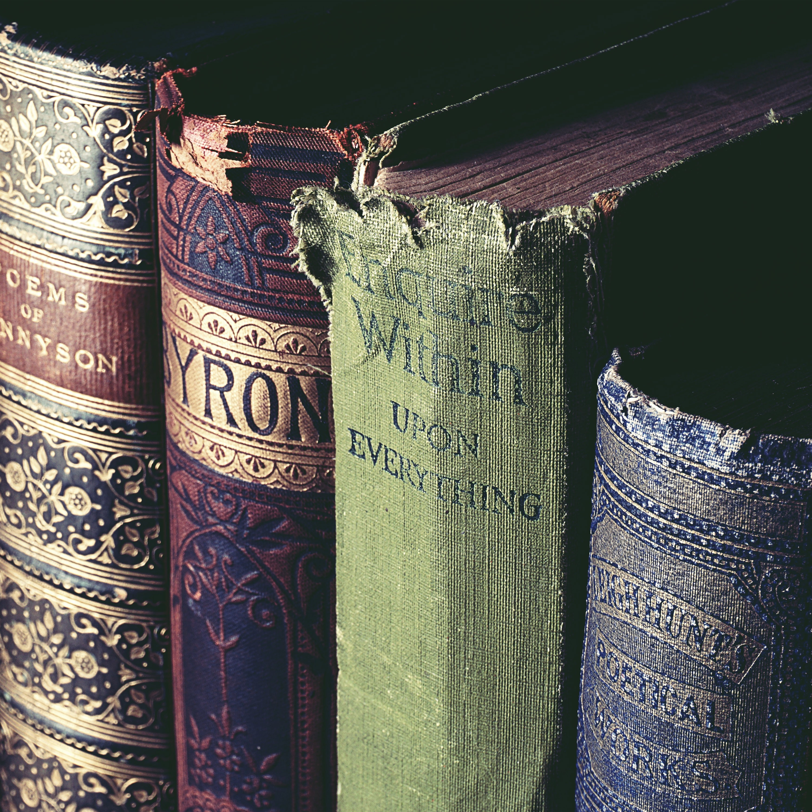

1. Rare Books
The core of the National Palace Museum's collection of treasured rare books was inherited from the old manuscripts, annotated editions of masters, movable print editions, and woodblock print editions through the ages from the former Qing, also including a small number of ancient imprints and old manuscripts originally from Korea and Japan. Among the more important objects, one can count the Complete Library of the Four Treasuries of the Wen-yüan Pavilion, the Abstracted Contents of the Four Treasuries of the Ch'ih-tsao Hall, block-printed editions of the T'ien-lu-lin-lang and the Wu-ying Palace, gazetteers, repositories of the Grand Secretariat, Ch'en Chung-t'ao's collection in the Yen-i Tower in Shan-ying, and Yang Shou-ching's book collection from his Kuan-hai Hall. This assembly of books is not only enormous in number, it also includes several extremely rare sole surviving editions. The collection further includes books from the Peking Library entrusted to the management of the Museum. Besides the rich collection of books through the ages, many books submitted in the early Qing and texts dealing with dramas provide an ideal source of material for researching book editions, Ming and Qing dynasty history, and folk literature.
